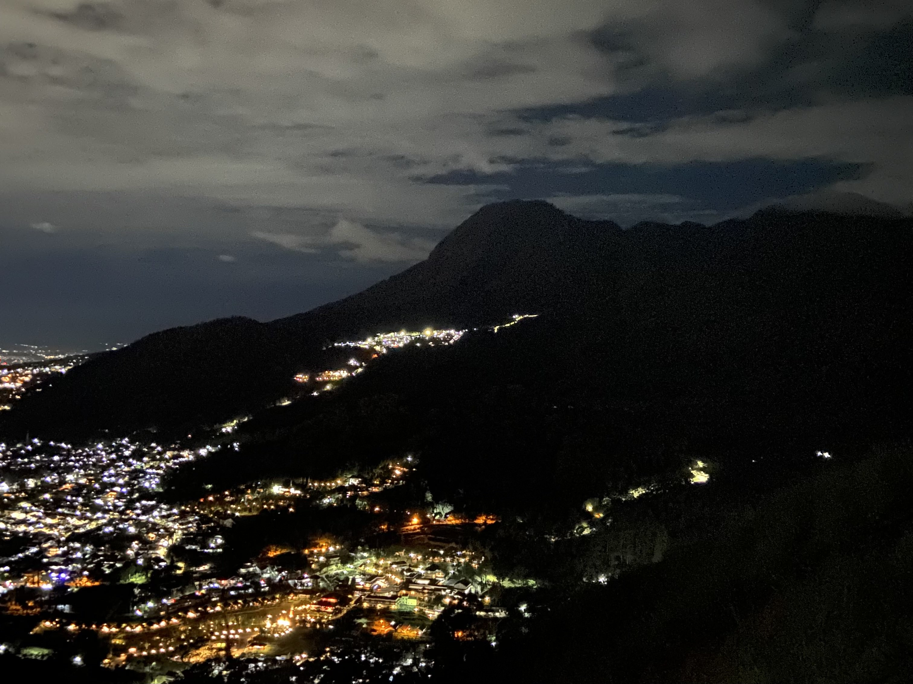

003 : Night Lights
Underneath the canopy of a million shimmering stars, Paralayang Batu comes alive at night, painting a breathtaking canvas of city lights. The cityscape twinkles and glows, as if it's sharing its secrets with the world. An enchanting spectacle that leaves you in awe of the urban beauty that never sleeps.
"The clearest way into the Universe is through a forest wilderness."
John Muir
